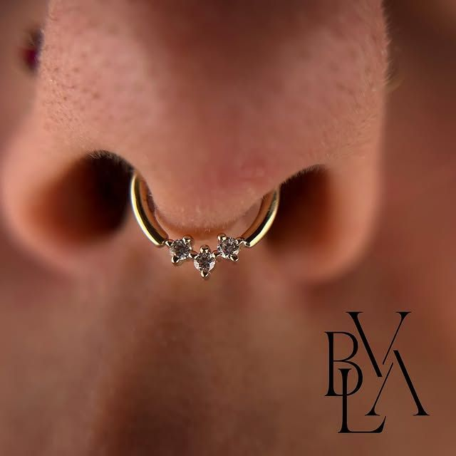
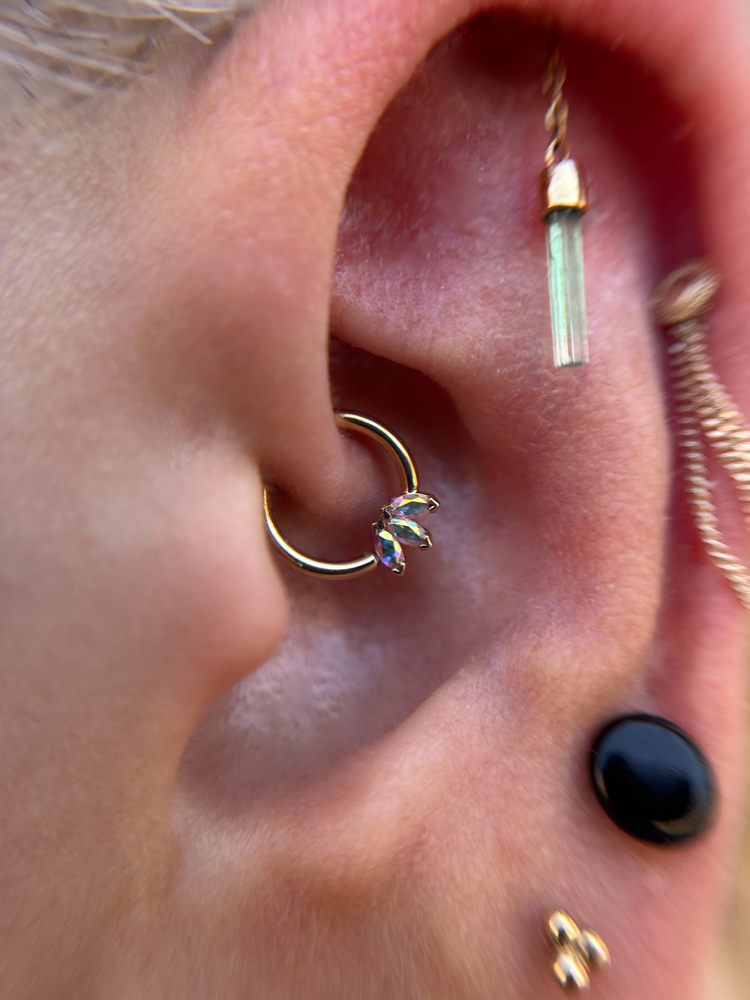

Tu cuerpo, tu estilo. Descubre tu piercing ideal.
En ETIA TATTOO, entendemos que un piercing es más que una joya. Es una extensión de tu personalidad.
Contáctanos
Si buscas un lugar de confianza para hacerte un piercing en Madrid, nuestro estudio en Coslada es tu mejor elección. Contamos con especialistas altamente cualificados y apasionados, dedicados a ofrecerte una experiencia segura, higiénica y totalmente personalizada.
Ofrecemos una amplia gama de perforaciones, desde las más populares como el helix, tragus, daith, lóbulo, ombligo o nariz, hasta opciones más avanzadas. Te asesoraremos sobre la mejor ubicación para tu piercing, el tipo de joya más adecuado y, lo más importante, te proporcionaremos todas las indicaciones para un cuidado y cicatrización óptimos.

Por ello, en ETIA TATTOO utilizamos exclusivamente materiales estériles de un solo uso y joyería de titanio de grado implante de alta calidad, garantizando la máxima biocompatibilidad.
Seguimos un riguroso protocolo de higiene y esterilización que supera todas las normativas sanitarias vigentes en la Comunidad de Madrid. Ven y descubre por qué somos el estudio de referencia para piercings seguros. Te garantizamos un servicio profesional, un ambiente acogedor y un resultado que te encantará.
Dudas habituales de quienes vienen a perforarse por primera vez en nuestro estudio de Coslada, Madrid.
Menos de lo que la mayoría espera. La perforación en sí dura uno o dos segundos, y lo que se siente es un pinchazo intenso pero muy breve, seguido de una sensación de calor que baja en pocos minutos.
Lo que más influye es la zona. El tejido blando (lóbulo, ombligo, nariz) molesta bastante menos que el cartílago, porque la aguja atraviesa menos resistencia. También influye tu estado ese día: venir descansado y habiendo comido algo antes marca una diferencia real, porque el bajón de azúcar y los nervios amplifican la sensación.
En el estudio trabajamos siempre con aguja, nunca con pistola, precisamente porque el corte limpio de la aguja resulta menos traumático para el tejido y más cómodo para ti.
Los que atraviesan cartílago grueso. El daith, el conch, el rook y el industrial son habitualmente los más molestos; el industrial, además, son dos perforaciones en la misma sesión. En el extremo opuesto, el lóbulo es con diferencia el más llevadero.
Dicho esto, hay algo que importa más que el pinchazo y que casi nadie pregunta: el tiempo de cicatrización. Un lóbulo cierra en 6 u 8 semanas, mientras que un piercing de cartílago puede tardar entre 6 y 12 meses en cicatrizar del todo. Ese periodo largo de cuidados es lo que de verdad determina si la experiencia sale bien, mucho más que los dos segundos de la perforación.
Si dudas entre varias opciones, ven y lo valoramos juntos: la anatomía de cada oreja manda más que cualquier lista general.
Limpia la zona una o dos veces al día con suero fisiológico estéril, aplicándolo con una gasa limpia y dejándolo actuar unos segundos. Seca después con papel limpio a toquecitos. No hace falta nada más: el exceso de limpieza irrita tanto como la falta.
No gires la joya. Es la creencia más extendida y también la más dañina, porque romper el canal que se está formando retrasa la cicatrización. Tampoco la toques con las manos sin lavar.
Vigila el roce: duerme del lado contrario, ten cuidado al pasar el peine o el secador, y evita los auriculares de diadema durante las primeras semanas si el piercing es de cartílago. Espera a cambiar la joya hasta que el piercer te confirme que está listo.
Suero fisiológico dos veces al día, por fuera y con cuidado, sin introducir nada dentro de la fosa nasal. Seca a toquecitos con papel limpio.
La nariz tiene un factor añadido: los cosméticos. Mantén lejos de la zona el maquillaje, las cremas faciales, los limpiadores y los exfoliantes durante la cicatrización. Si usas gafas, revisa que la montura no apoye ni roce sobre el piercing.
Al sonarte, hazlo con suavidad y con un pañuelo limpio. Evita piscinas y playa las primeras semanas. Un nostril suele tardar entre 4 y 6 meses en cicatrizar; el tabique, algo menos. Si te sale un pequeño bultito junto a la joya, no te alarmes, es frecuente y tiene solución, pero pásate por el estudio para que lo veamos antes de tratarlo por tu cuenta.
La boca cicatriza rápido, pero exige constancia los primeros días. Enjuágate con suero fisiológico o con un colutorio sin alcohol después de cada comida, bebida o cigarrillo. El alcohol de los colutorios convencionales reseca e irrita la herida.
Es normal que la lengua se hinche durante los tres o cuatro primeros días. Ayuda tomar cosas frías, chupar hielo y comer blando. Evita el alcohol, el tabaco y las comidas muy picantes o muy calientes durante ese periodo.
Dos cosas importantes. La primera: no juegues con la joya contra los dientes, porque a largo plazo puede desgastar el esmalte y provocar retracción de encías. La segunda: la barra inicial es larga a propósito para dejar sitio a la hinchazón, y hay que sustituirla por una más corta cuando baje, normalmente a las dos o tres semanas. Si te olvidas de ese cambio, la barra larga es justo lo que acaba golpeando los dientes.
Es el piercing más lento de todos los habituales: entre 6 y 12 meses hasta la cicatrización completa. Vale la pena saberlo desde el principio para no confiarse a los dos meses.
Limpia con suero fisiológico una o dos veces al día y seca bien la zona después de la ducha, porque la humedad retenida en el pliegue favorece las infecciones.
La clave está en la ropa. Usa prendas holgadas y evita los pantalones de tiro alto, los cinturones y las cinturas ajustadas que presionen o rocen justo encima. Ten cuidado también con los ejercicios abdominales y con los deportes de contacto durante los primeros meses, y evita piscinas, playa y bañeras las primeras semanas.
Es normal que un piercing recién hecho presente enrojecimiento, algo de hinchazón y una secreción clara los primeros días. Si aparece dolor intenso que no cede, pus amarillento o verdoso, o fiebre, consulta con un médico. Para cualquier duda sobre tu cicatrización puedes escribirnos o pasarte por el estudio.
Envíanos un mensaje para resolver tus dudas, consultar disponibilidad o comenzar a planificar tu diseño. Estamos listos para ayudarte a dar el primer paso.
¡Pide tu cita hoy!